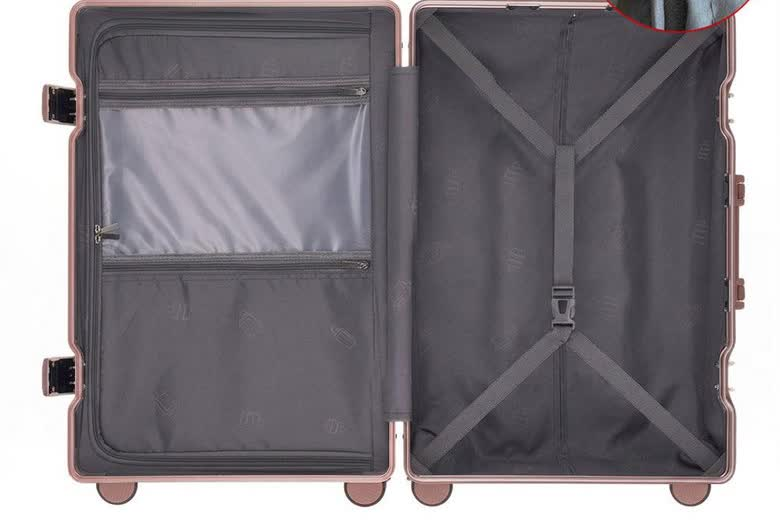
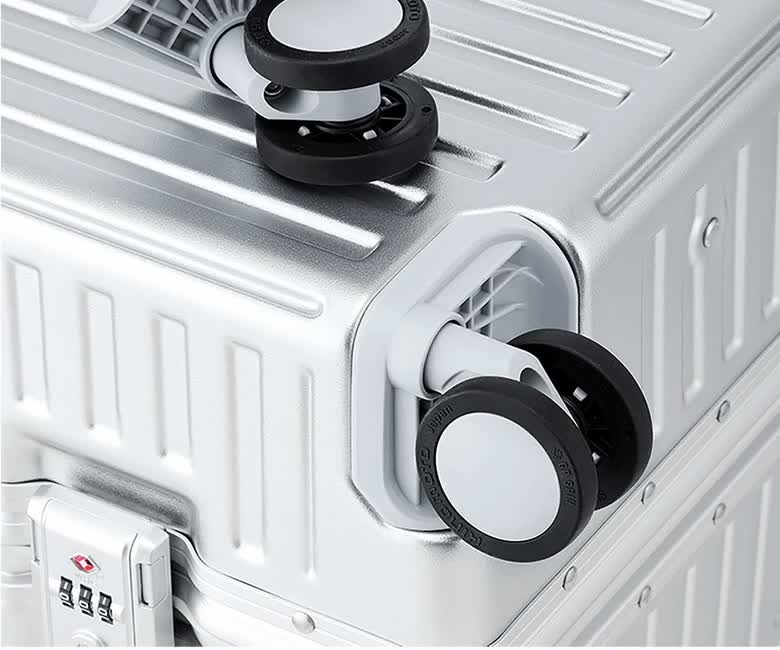
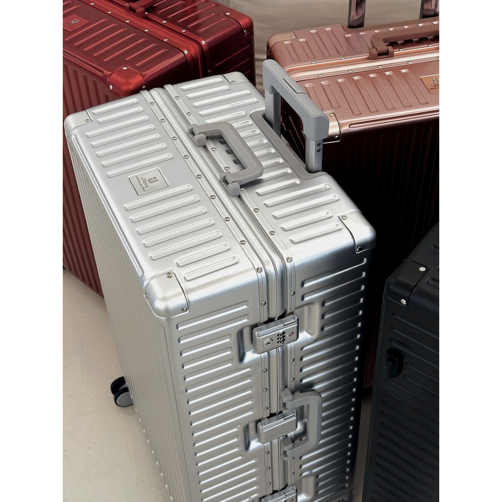
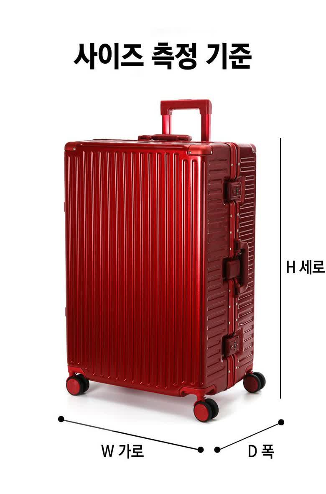
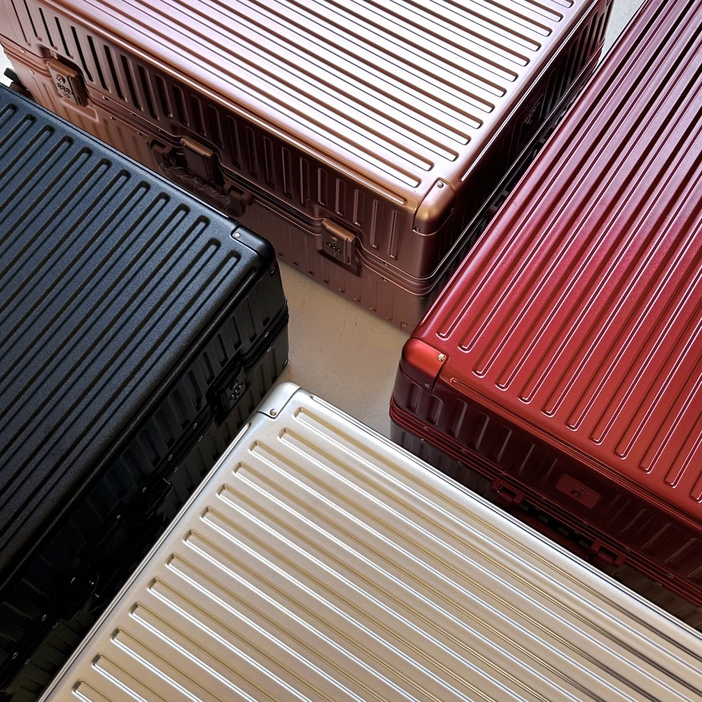

<meta charset="utf-8">
<title>28인치 캐리어 고를 때 보는 3가지 — 나의 투자 그리고 행복한 여행</title>
<meta name="description" content="유랑캐리어 28인치 리뷰 — 알루미늄 풀프레임, HINOMOTO 휠, TSA SENTRY.">
<meta name="viewport" content="width=device-width, initial-scale=1">
<link rel="canonical" href="https://danielmoon82.github.io/moon/posts/yurang-carrier-28.html">
<link rel="preconnect" href="https://fonts.googleapis.com">
<link rel="preconnect" href="https://fonts.gstatic.com" crossorigin>
<link rel="stylesheet" href="https://fonts.googleapis.com/css2?family=Hahmlet:wght@400;600;800&family=IBM+Plex+Mono:wght@400;500&family=IBM+Plex+Sans+KR:wght@300;400;500;600&display=swap">

<style>
  :root{
    --paper:#F2EEE6;--surface:#FAF8F3;--surface-2:#E7E1D5;
    --ink:#191510;--ink-2:#4A4235;--ink-3:#7D7364;
    --line:#D6CEBF;--line-soft:#E4DDD0;--accent:#B06A15;--accent-bright:#C2761A;
    --up:#E5484D;--down:#3B82F6;
    --f-display:"Hahmlet",'Nanum Myeongjo',"Apple SD Gothic Neo",serif;
    --f-body:"IBM Plex Sans KR","Apple SD Gothic Neo","Malgun Gothic",sans-serif;
    --f-mono:"IBM Plex Mono","SFMono-Regular",Consolas,monospace;
    --pad:clamp(20px,5vw,64px);
  }
  @media (prefers-color-scheme:dark){
    :root:not([data-theme="light"]){
      --paper:#0B1120;--surface:#121A2C;--surface-2:#1A2439;
      --ink:#E9EEF7;--ink-2:#A9B5C9;--ink-3:#72809A;
      --line:#26314A;--line-soft:#1D2739;--accent:#E8A33D;--accent-bright:#F0B45C;
    }
  }
  *{box-sizing:border-box;}
  body{margin:0;background:var(--paper);color:var(--ink);font-family:var(--f-body);
    font-weight:300;font-size:1rem;line-height:1.75;-webkit-font-smoothing:antialiased;}
  a{color:inherit;}
  img{max-width:100%;height:auto;}
  .wrap{max-width:760px;margin:0 auto;padding-inline:var(--pad);}
  .nav{position:sticky;top:0;z-index:20;background:color-mix(in srgb,var(--paper) 88%,transparent);
    backdrop-filter:saturate(180%) blur(12px);border-bottom:1px solid var(--line);}
  .nav-in{display:flex;align-items:center;justify-content:space-between;height:58px;}
  .brand{font-family:var(--f-display);font-weight:600;font-size:1rem;letter-spacing:-.02em;text-decoration:none;}
  .back{font-family:var(--f-mono);font-size:.72rem;color:var(--ink-3);text-decoration:none;}
  .article{padding-block:clamp(40px,7vw,72px) clamp(56px,9vw,96px);}
  .eyebrow{font-family:var(--f-mono);font-size:.68rem;letter-spacing:.16em;text-transform:uppercase;
    color:var(--accent);margin:0 0 14px;}
  h1{font-family:var(--f-display);font-weight:800;font-size:clamp(1.6rem,4.4vw,2.3rem);
    line-height:1.3;letter-spacing:-.03em;margin:0 0 16px;}
  .byline{font-family:var(--f-mono);font-size:.72rem;color:var(--ink-3);
    padding-bottom:24px;border-bottom:1px solid var(--line);margin-bottom:32px;}
  h2{font-family:var(--f-display);font-weight:600;font-size:1.25rem;letter-spacing:-.02em;margin:42px 0 14px;}
  h3{font-family:var(--f-display);font-weight:600;font-size:1.05rem;letter-spacing:-.02em;
    margin:30px 0 10px;padding-top:14px;border-top:1px solid var(--line-soft);}
  h3 .code{font-family:var(--f-mono);font-size:.7rem;font-weight:400;color:var(--ink-3);margin-left:6px;}
  p{margin:0 0 18px;color:var(--ink-2);}
  ul.checks{margin:0 0 18px;padding-left:20px;color:var(--ink-2);}
  ul.checks li{margin-bottom:8px;font-size:.94rem;}
  table{width:100%;border-collapse:collapse;font-size:.88rem;margin-bottom:8px;}
  th{font-family:var(--f-mono);font-size:.66rem;letter-spacing:.06em;text-transform:uppercase;
    color:var(--ink-3);text-align:right;padding:8px 6px;border-bottom:1px solid var(--line);}
  th:first-child{text-align:left;}
  td{padding:10px 6px;border-bottom:1px solid var(--line-soft);color:var(--ink-2);}
  td.num{font-family:var(--f-mono);text-align:right;font-variant-numeric:tabular-nums;}
  td.up{color:var(--up);} td.down{color:var(--down);}
  .scroll{overflow-x:auto;}
  figure{margin:22px 0;}
  figure img{display:block;border-radius:3px;background:var(--surface-2);}
  figcaption{margin-top:8px;font-family:var(--f-mono);font-size:.68rem;color:var(--ink-3);text-align:center;}
  .note{margin-top:34px;padding:16px 18px;border-left:3px solid var(--accent);
    background:var(--surface);border-radius:0 3px 3px 0;}
  .note p{margin:0;font-size:.85rem;color:var(--ink-3);}
  .foot{border-top:1px solid var(--line);background:var(--surface);padding-block:30px 38px;}
  .foot p{margin:0;font-size:.8rem;color:var(--ink-3);}
</style>

<nav class="nav">
  <div class="wrap nav-in">
    <a class="brand" href="../index.html">나의 투자 그리고 행복한 여행</a>
    <a class="back" href="../index.html#stocks">← 시황으로</a>
  </div>
</nav>

<main class="wrap article">
  <p class="eyebrow">Market</p>
  <h1>유랑캐리어 28인치 — 스펙 정리와 사이즈 선택 기준</h1>
  <p class="byline">여행 · 2026-09-10 기준</p>

  <p>한 줄 요약: 알루미늄 풀프레임 + 독일소재 PC 바디, HINOMOTO 사일런트 우레탄 휠, TSA SENTRY 잠금. 28인치 46×73×31cm / 5.0kg. 2026년 9월 10일 기준 139,980원(정가 189,000원, 25% 할인), 상품평 4,154개.</p>
  <p>이 글은 쿠팡 상품페이지와 상세페이지에서 직접 확인할 수 있는 값만 모아 정리한 기록입니다. 사용 후 내구성처럼 시간이 필요한 항목은 판단하지 않고 남겨 뒀습니다.</p>
  <div style="text-align:center;margin:30px 0"><a href="https://link.coupang.com/a/gVo1exiop2" target="_blank" rel="nofollow sponsored noopener" style="display:inline-block;padding:15px 28px;background:#E34948;color:#fff;font-weight:700;font-size:18px;text-decoration:none;border-radius:8px"><b>▶ 유랑캐리어 28인치 상품 페이지 보기</b></a></div>
  <h2>1. 캐리어에서 실제로 문제가 생기는 지점</h2>
  <p>캐리어가 망가지는 방식은 거의 정해져 있습니다.</p>
  <ul class="checks">
    <li>지퍼가 벌어지거나 이가 빠진다 — 가장 흔하고, 가장 손쓸 수 없다</li>
    <li>바퀴가 깨지거나 한쪽만 안 돌아간다 — 공항에서 끌 수 없게 된다</li>
    <li>모서리가 찍혀 프레임이 뒤틀린다 — 뚜껑이 안 닫힌다</li>
  </ul>
  <p>그래서 캐리어를 볼 때 세 가지만 봅니다. 수납, 주행, 그리고 여닫는 방식입니다.</p>
  <p>이 순서대로 하나씩 보겠습니다.</p>
  <h2>2. 수납 — 더블지퍼포켓과 X형 고정스트랩</h2>
  <figure><figcaption>내부 구성 — 한쪽은 더블지퍼포켓, 반대쪽은 X형 고정스트랩</figcaption></figure>
  <p>내부는 좌우로 나뉩니다. 한쪽은 지퍼 포켓이 두 겹으로 있고, 반대쪽은 X자 스트랩으로 짐을 눌러 고정하는 구조입니다.</p>
  <p>이 구성이 실제로 갈리는 지점은 '돌아올 때'입니다. 갈 때는 짐이 정리돼 있지만 돌아올 때는 옷이 늘어나고 부피가 커집니다. X형 스트랩은 그 상태에서 짐이 안에서 돌아다니지 않게 잡아 줍니다.</p>
  <p>지퍼 포켓은 세면도구나 젖은 옷을 따로 담는 데 씁니다. 상세페이지에는 방수 포켓으로 표기돼 있습니다.</p>
  <div class="note"><p>스트랩이 있으면 짐을 덜 채워도 흔들리지 않습니다. 28인치를 쓰면서 짐을 반만 싣는 경우가 많다면 이 부분이 생각보다 크게 체감됩니다.</p></div>
  <h2>3. 주행 — HINOMOTO 사일런트 우레탄 휠</h2>
  <figure><figcaption>바퀴 — HINOMOTO JAPAN 각인이 들어간 우레탄 휠</figcaption></figure>
  <p>바퀴에 HINOMOTO JAPAN 각인이 있습니다. 캐리어 바퀴 쪽에서 오래 쓰이는 일본 부품 브랜드입니다.</p>
  <p>우레탄 휠은 플라스틱 휠보다 소음이 적고 노면 충격을 덜 받습니다. 공항 대리석이나 호텔 복도처럼 매끈한 바닥에서 차이가 큽니다.</p>
  <p>바퀴는 캐리어에서 가장 먼저 망가지는 부품이라, 교체가 되는지도 중요합니다. 상세페이지에는 A/S 가능 영역으로 바퀴, 잠금장치, 3단 핸들, 손잡이, 스탠드블록이 표기돼 있습니다.</p>
  <p>다만 A/S 절차와 비용은 판매자 안내를 직접 확인하시는 편이 정확합니다. 상품페이지 표기만으로는 조건까지 알 수 없습니다.</p>
  <h2>4. 여닫는 방식 — 알루미늄 풀프레임 + TSA SENTRY</h2>
  <figure><figcaption>상단 손잡이와 측면 프레임 잠금부</figcaption></figure>
  <p>지퍼가 아니라 프레임으로 여닫습니다. 뚜껑과 몸통이 알루미늄 테두리로 맞물리고, 잠금 레버가 두 곳에서 눌러 고정합니다.</p>
  <p>장점은 명확합니다. 지퍼가 없으니 지퍼가 터질 일이 없고, 칼로 지퍼 사이를 벌리는 방식의 도난에도 취약하지 않습니다.</p>
  <p>잠금은 TSA SENTRY 인증입니다. 미국 노선에서 보안 검사관이 마스터키로 열 수 있어, 잠근 채로 부쳐도 자물쇠가 파손되지 않습니다. 미국을 경유하거나 입국하는 일정이면 이 표기가 있는지 확인하는 편이 낫습니다.</p>
  <p>바디는 독일 소재 PC(폴리카보네이트)로 표기돼 있고, 상·하부 PC 판을 알루미늄 프레임으로 결합한 구조입니다. 외부 프레임에는 생활방수용 러버가 들어가 있습니다.</p>
  <p>단점도 같이 적어 둡니다. 프레임 방식은 지퍼식보다 무겁고, 은색 알루미늄은 찍힌 자리가 눈에 잘 띕니다. 몇 번 부치면 모서리에 흔적이 남는 걸 감안하시는 게 맞습니다.</p>
  <h2>5. 사이즈 — 20 / 24 / 28인치, 무게를 같이 봐야 한다</h2>
  <figure><figcaption>사이즈별 규격과 무게 (상세페이지 기준, 측정 방법에 따라 1~3cm 오차)</figcaption></figure>
  <ul class="checks">
    <li>20인치 — 35 × 53 × 23cm / 3.5kg — 기내 반입 기준, 2~3일</li>
    <li>24인치 — 42 × 65 × 29cm / 4.2kg — 4~7일, 가장 무난하다</li>
    <li>28인치 — 46 × 73 × 31cm / 5.0kg — 장기 여행·유럽·가족 짐</li>
  </ul>
  <p>여기서 놓치기 쉬운 게 무게입니다. 위탁 수하물 한도가 23kg인 노선에서 28인치를 쓰면, 캐리어 본체 5kg을 빼고 짐으로 쓸 수 있는 건 18kg입니다.</p>
  <p>반대로 20인치는 3.5kg이라 여유가 있지만 부피가 작습니다. 기내 반입 규격은 항공사마다 다르니 예약한 항공사 기준을 확인하셔야 합니다.</p>
  <div class="note"><p>일정이 5일 안쪽이고 짐을 많이 안 챙기는 편이면 24인치가 맞습니다. 유럽처럼 열흘 넘는 일정이거나 두 사람 짐을 한 캐리어에 싣는다면 28인치입니다.</p></div>
  <p>상품페이지 옵션에는 28인치가 46.5 × 74 × 32cm로 표기돼 있습니다. 상세페이지 표(46 × 73 × 31cm)와 1cm 정도 차이가 나는데, 이는 바퀴·손잡이 포함 여부에 따른 측정 차이로 안내돼 있습니다.</p>
  <h2>6. 가격과 구매 정보</h2>
  <figure><figcaption>컬러 구성 — 실버·블랙·레드·로즈골드 등</figcaption></figure>
  <ul class="checks">
    <li>가격 — 139,980원 (정가 189,000원, 25% 할인)</li>
    <li>상품평 — 4,154개</li>
    <li>배송 — 무료배송, 익일 도착</li>
    <li>구성 — 보관용 더스트커버, 여분 바퀴 1개 (판매자 사은품 안내 기준)</li>
  </ul>
  <p>가격은 2026년 9월 10일 기준입니다. 쿠팡 가격은 자주 바뀌니 구매 전에 현재 가격을 확인하시는 게 좋습니다.</p>
  <p>사은품 구성과 할인율은 판매자 이벤트에 따라 달라질 수 있어, 상품페이지 표기를 그대로 옮겨 적었습니다.</p>
  <h2>7. 이런 사람에게 맞고, 이런 사람에겐 안 맞는다</h2>
  <p>맞는 경우입니다.</p>
  <ul class="checks">
    <li>지퍼식 캐리어에서 지퍼가 터진 경험이 있다</li>
    <li>미국 노선이 있어 TSA 인증 잠금이 필요하다</li>
    <li>10만원대에서 프레임 방식을 써보고 싶다</li>
    <li>장기 여행이나 가족 짐으로 큰 용량이 필요하다</li>
  </ul>
  <p>안 맞는 경우입니다.</p>
  <ul class="checks">
    <li>캐리어 무게를 1kg이라도 줄여야 한다 — 프레임 방식은 지퍼식보다 무겁다</li>
    <li>겉에 흠집이 남는 걸 신경 쓴다 — 알루미늄 프레임은 자국이 눈에 띈다</li>
    <li>저비용 항공의 기내 반입만 쓸 계획이다 — 이 경우 20인치를 따로 봐야 한다</li>
  </ul>
  <p>정리하면, 이 캐리어의 값은 '프레임 방식과 일제 바퀴를 10만원대에서 쓴다'는 지점에 있습니다. 가볍고 얇은 걸 원한다면 애초에 다른 방식을 봐야 합니다.</p>
  <h2>8. 30초 영상으로 보기</h2>
  <div class="embed" style="position:relative;max-width:400px;margin:2rem auto;aspect-ratio:9/16"><iframe src="https://www.youtube.com/embed/8ImmowsbocE" title="유랑캐리어 28인치 30초 요약" style="position:absolute;inset:0;width:100%;height:100%;border:0;border-radius:12px" allow="accelerometer; autoplay; clipboard-write; encrypted-media; gyroscope; picture-in-picture" allowfullscreen loading="lazy"></iframe></div>
  <div style="text-align:center;margin:30px 0"><a href="https://youtube.com/shorts/8ImmowsbocE" target="_blank" rel="nofollow sponsored noopener" style="display:inline-block;padding:15px 28px;background:#222;color:#fff;font-weight:700;font-size:18px;text-decoration:none;border-radius:8px"><b>▶ 유튜브에서 영상 보기</b></a></div>
  <p>수납·바퀴·손잡이·전체 디자인 순서로 짧게 정리한 영상입니다.</p>
  <h2>마무리</h2>
  <p>캐리어는 오래 쓰는 물건이라, 싸게 사는 것보다 안 망가지는 지점을 사는 게 남습니다.</p>
  <p>수납이 정리되는지, 바퀴가 조용히 굴러가는지, 여닫는 데서 터질 데가 없는지. 이 세 가지만 확인하면 크게 후회할 일은 줄어듭니다.</p>
  <div style="text-align:center;margin:30px 0"><a href="https://link.coupang.com/a/gVo1exiop2" target="_blank" rel="nofollow sponsored noopener" style="display:inline-block;padding:15px 28px;background:#E34948;color:#fff;font-weight:700;font-size:18px;text-decoration:none;border-radius:8px"><b>▶ 유랑캐리어 28인치 상품 페이지 보기</b></a></div>
  <p style="font-size:12px;color:#999;line-height:1.6;margin-top:36px">쿠팡파트너스 활동으로 일정액의 수수료를 받을수있습니다</p>
</main>

<footer class="foot">
  <div class="wrap"><p>나의 투자 그리고 행복한 여행 · 투자 판단의 참고 자료일 뿐, 매수·매도를 권유하지 않습니다.</p></div>
</footer>
